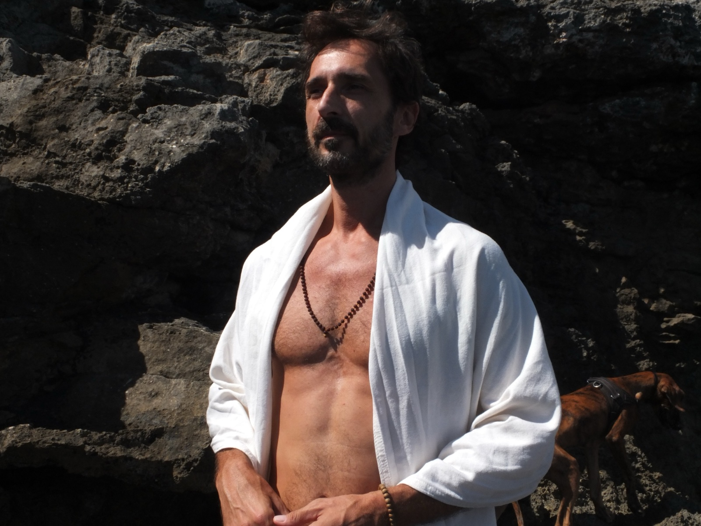
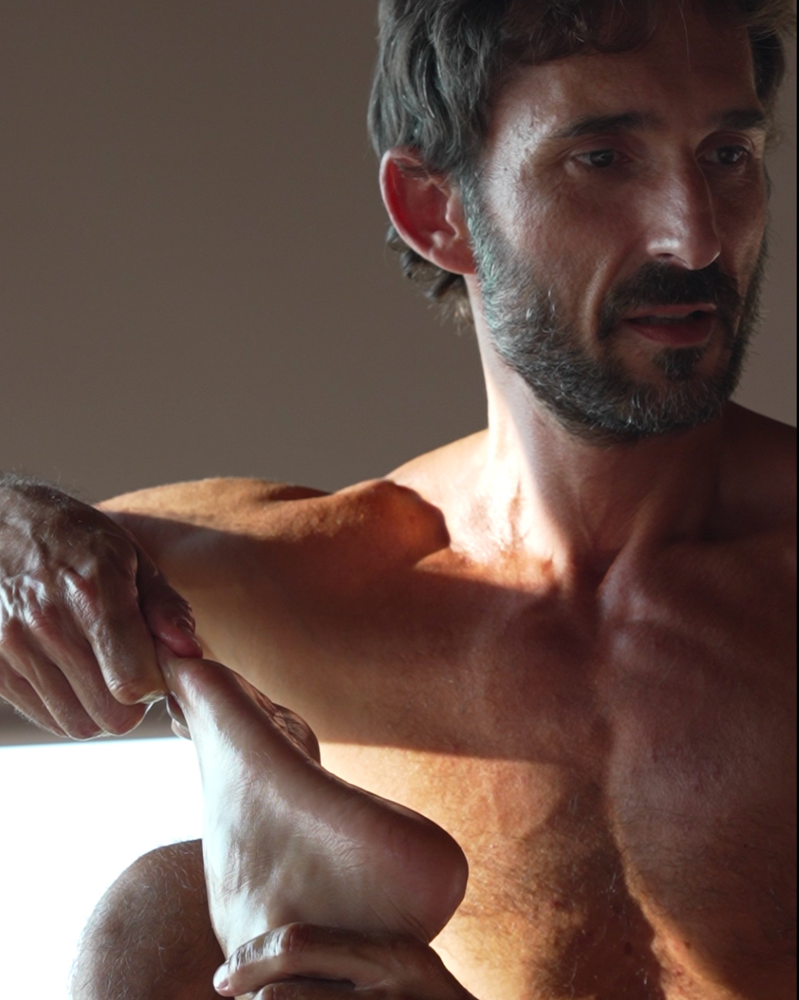

ShaviTantric Massage · Cala d'Or, Mallorca
"All authentic paths lead to the same ultimate reality." — Ramakrishna
Book a session"All authentic paths lead to the same ultimate reality." — Ramakrishna
Book a session“Every instrument of healing has its own purpose, its place, and its time. When you need to awaken your energy, massage can be a balm: to be touched with love and presence is often just what the heart needs to open. Some beings, through their hands and their presence, help set the heart free. Let yourself be touched! Open to your own energy, let the life within you stir awake and light your way.” — Ketan Raventós Klein, "Sanar el Corazón"

I am Shavi. I accompany people in reconnecting with their body through tantric massage, a practice that integrates every aspect of the human being: physical, energetic, emotional, mental, and also sexual.
I trained at the Verma Kalavati School, and I work from absolute respect, listening, and presence. My space is in Cala d'Or, a quiet place designed so you can let go and inhabit the moment.
Closeness and touch are a natural part of how I relate to others. I find it easy to connect on equal terms and make space for intimacy, without forcing it. In my sessions, that closeness goes hand in hand with attentive listening and respect for your pace and boundaries.
A touch empty of intention that brings presence to every part of the body.
So often we carry our body like a house with its windows closed: tensions we can't trace, areas we've stopped feeling, a breath that stays short. Here there is no rush and nothing to achieve. Just present hands, warm oil, and your breath setting the rhythm.
Through conscious touch, supported by the breath, we bring attention to every part of the body. What was rigid softens, what was asleep awakens, and energy begins to flow freely again.
Little by little, the energy awakened during the session rises along the central channel to the heart. There, sexuality and affection, which we so often live apart, meet again. From this meeting arise deep relaxation and, at times, states of meditation and expanded awareness.
Your body feels inhabited again, and your heart is back home.



Among turquoise coves and pine forests, in the southeast of Mallorca. A serene setting that is part of the experience: the calm of the sea accompanies the work of the body.
All massages are done on a futon on the floor, with warm oil, in a private and comfortable space.
A full-body massage with warm oil to release muscle tension and stress. Ideal if it’s your first time.
We begin with a conversation to understand what you need. Then, a relaxing massage with diaphragm work to release tension and allow a deeper relaxation.
The complete experience: a preliminary conversation, a short opening ritual to bring presence into the body, and a conscious breathing massage, ending with a visceral massage (gentle work on the abdomen) and a traditional massage of the intimate areas, always with your consent and agreed boundaries.
Sessions in my space in Cala d'Or or at home, provided there is room to lay a futon on the floor.